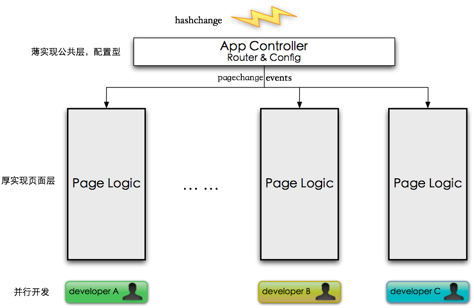
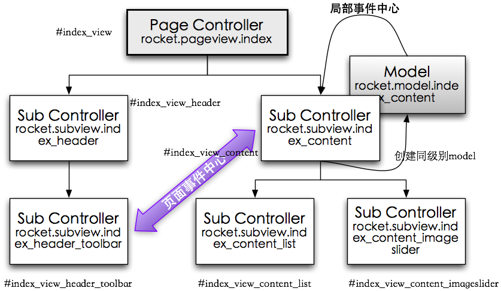
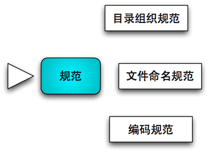
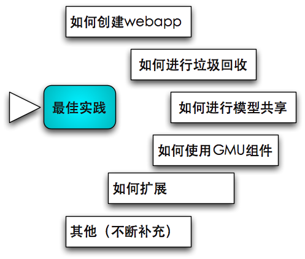
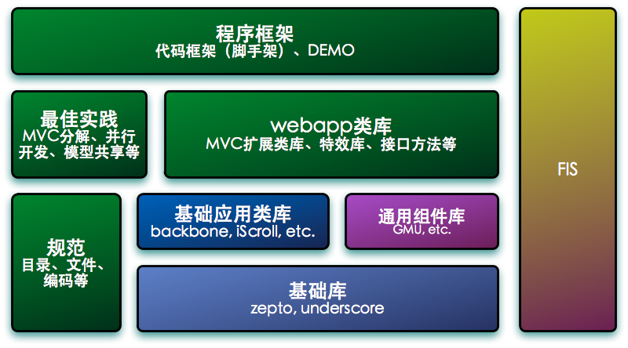

% ROCKET框架简介 | hdm258i@gmail.com | 2013-04-11 | 简介, webapp框架
本文给大家介绍一个WebApp开发框架：Rocket框架。简而言之，她是本人在开发Mobile HTML5 SPA的过程中
逐渐形成的通用开发框架，目的是帮助广大web开发人员快速创建高性能、易维护、支持多人开发的webapp程序。
Rocket框架最早应用在VS的webapp产品中，目前线上版本是2.0，通过不断的产品检验和开发同学的实践，
功能更加完善，特总结几大亮点罗列如下：
对webapp开发的通用工作进行了抽取，提供webapp开发的代码脚手架。为开发者提前做了很大一部分的工作，
开发者可以把绝大部分精力投在单个页面功能的设计和实现上，
而不用关心如何管理页面和页面间协作，也不用关心代码怎么组织，可以直接着手编写具体页面代码。
多个页面的开发完全独立，完美支持多人并行开发。

对webapp页面功能设计和实现提供了一套切实可行的方法论，帮助开发者实现复杂页面功能逻辑时能做到化繁为简，
轻松应对。Rocket框架提炼出的MVC分解模型，使开发者能够将复杂页面功能进行模块分解，
通过构建视图树，将控制逻辑分摊到多个节点，达到分而治之的效果。同时，页面事件中心和局部事件中心
对页面模块之间的交互进行了良好的解耦，页面模块更具独立性，更加容易开发和维护。

提供友好的配置项和扩展接口。提供方便的路由、切换效果、位置保留等可配置项，以及自定义动画效果等扩展接口。
// 路由配置
routes: {
'': 'index'
,'list/:type': 'list'
,'detail/:type/:src/:title/:author/:time/:nid'
: 'detail'
,'listzaker/:type': 'listzaker'
,'navzaker': 'navzaker'
...
}
// 页面切换顺序配置
,pageOrder: [
'index'
, 'navzaker'
, 'list'
, 'detail'
, ...
]
// 位置记忆，默认为false，不进行位置记忆
,enablePositionRestore: true
// 默认页面切换动画
,defaultPageTransition: 'slide'
// 页面切换动画配置
,pageTransition: {
,'index-navzaker': 'fade'
,'index-listzaker': 'slide'
,'navzaker-listzaker': 'dropdown'
}
规范和开发流程。制定了一套开发规范，包括目录规范、文件规范、编码规范等，同时总结和梳理了webapp开发流程。

提供丰富的demo code，提供开发者学习参考。这些demo都以实际产品为原型，例举了各类方案的实现，
比如垃圾回收、模型共享、GMU组件使用等等。开发者甚至可以从demo中找到和你的功能实现接近的代码。

与业内优秀代码库与前端开发平台整合。基础库使用Zepto，UI库使用GMU，MVC应用类库使用Backbone，
前端模板库使用underscore，前端开发平台使用FIS2。

PS： 请确保浏览以下站点时使用对应的设备进行浏览
http://m.baidu.com/newshttp://m.baidu.com/newshttp://m.baidu.com/videohttp://m.baidu.com/videoPS：查看以下Demo，请使用Chrome浏览器
http://258i.com/template/hellorocket/hellorocket.htmlhttp://258i.com/template/slider/slider.htmlhttp://258i.com/template/howtorocket/howtorocket.htmlhttp://258i.com/template/mynotes/mynotes.html